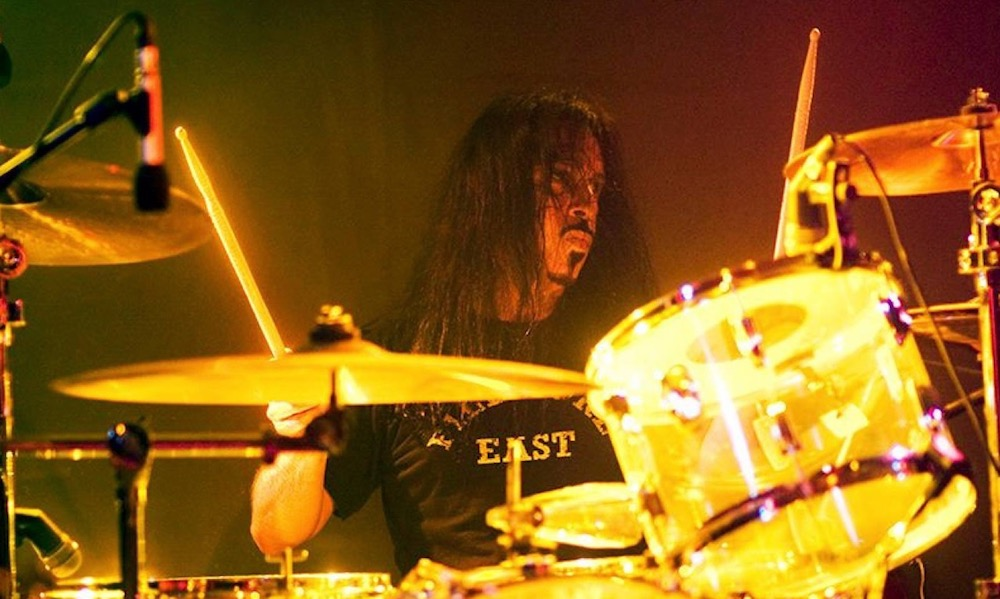

HOME
GUITARIST
PIANIST
DRUMMER
MUSICIANS
CREDITS
GINGER BAKER
Peter Edward "Ginger" Baker (19 August 1939 – 6 October 2019) was an English drummer and a co-founder of the rock band Cream. His work in the 1960s and 1970s earned him the reputation of "rock's first superstar drummer", for a style that melded jazz and African rhythms and pioneered both jazz fusion and world music.
Baker gained early fame as a member of Blues Incorporated and the Graham Bond Organisation, both times alongside bassist Jack Bruce, with whom Baker would often clash. In 1966, Baker and Bruce joined guitarist Eric Clapton to form Cream, which achieved worldwide success but lasted only until 1968, in part due to Baker's and Bruce's volatile relationship. After briefly working with Clapton in Blind Faith and leading Ginger Baker's Air Force, Baker spent several years in the 1970s living and recording in Africa, often with Fela Kuti, in pursuit of his long-time interest in African music. Among Baker's other collaborations are his work with Gary Moore, Masters of Reality, Public Image Ltd, Hawkwind, Atomic Rooster, Bill Laswell, jazz bassist Charlie Haden, jazz guitarist Bill Frisell and Ginger Baker's Energy.
Baker's drumming is regarded for its style, showmanship, and use of two bass drums instead of the conventional one. In his early days, he performed lengthy drum solos, most notably in the Cream song "Toad", one of the earliest recorded examples in rock music. Baker was an inductee of the Rock and Roll Hall of Fame as a member of Cream in 1993, of the Modern Drummer Hall of Fame in 2008, and of the Classic Drummer Hall of Fame in 2016. Baker was noted for his eccentric, often self-destructive lifestyle, and he struggled with heroin addiction for many years. He was married four times and fathered three children.
KNOW MORE!!
FRANKIE BANALI

Frankie Banali (November 14, 1951 – August 20, 2020) was an American rock drummer, most widely known for his work with heavy metal band Quiet Riot. His signature tone and iconic drum intros first became famous on their album Metal Health, which was the first metal album to hit number one on the Billboard charts and ushered in the 80's metal band era. He had been the band's manager since 1993. He played drums in the heavy metal band W.A.S.P., as well as with Billy Idol. Banali was briefly a touring drummer for Faster Pussycat and Steppenwolf. In the last few months of his life he was also an abstract painter.
Frankie Banali was born on November 14, 1951, in Queens, New York City, New York, to Italian immigrants, Jack and Martha Banali. In 1975, he moved to Los Angeles, where he spent four years playing drums with various bands, including Steppenwolf with Nick St. Nicholas and Goldy McJohn. He was a very prolific session player and played on many hits for other artists including Billy Idol's "Mony Mony" and "L.A. Woman" and over 100 recordings. He also played drums on the acclaimed "Hughes/Thrall" album with Glenn Hughes and Pat Thrall. In 1979, Banali, along with bassist Dana Strum, was in secret rehearsals with then Quiet Riot guitarist Randy Rhoads and Ozzy Osbourne as the latter was looking for a guitar player to launch a new band.
In 1980, he joined forces with Kevin DuBrow and formed DuBrow with a revolving door of musicians, before settling with former Snow guitarist Carlos Cavazo and bassist Chuck Wright. After Rudy Sarzo replaced Wright, DuBrow changed the name of the group to Quiet Riot (which was the same name of the band that DuBrow, Sarzo and Randy Rhoads had used prior to Sarzo and Rhoads leaving to join Ozzy Osbourne's band). After signing with Pasha Records in September 1982, Banali and Quiet Riot found success with Metal Health, which was released six months after signing their deal with Pasha Records. In November 1983, only eight months after its release, Metal Health reached the #1 spot on the Billboard 200 charts (replacing the Police's Synchronicity), making it the first heavy metal album to go #1 on the charts. Metal Health eventually sold over 10 million copies worldwide and help usher in the decade of heavy metal hair rock.
By the time Condition Critical was released in July 1984, tensions began to slowly break Quiet Riot apart, but Banali held on, through lineup changes and a diminishing fan base (mostly caused by Kevin DuBrow's erratic behavior). By 1989, Quiet Riot disbanded after touring in support of their self-titled album, which was released in October 1988. Around the time of recording their self-titled album, he also played drums for W.A.S.P.'s The Headless Children album. After Quiet Riot disbanded, he rejoined W.A.S.P. to tour in support of the album. In 1990, Banali was called in by Faster Pussycat to replace the fired Mark Michals, during their tour in support of their 1989 album Wake Me When It's Over. After his mother's death in November 1990, Banali regrouped and formed a band called Heavy Bones with guitarist Gary Hoey.
KNOW MORE!!